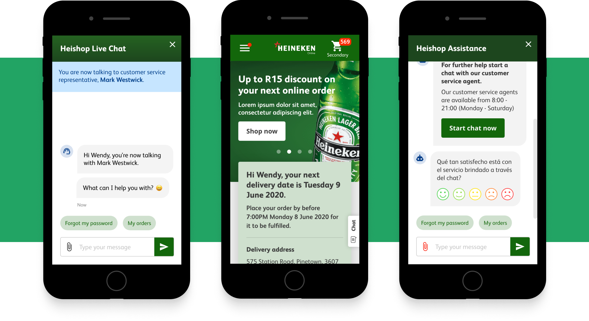
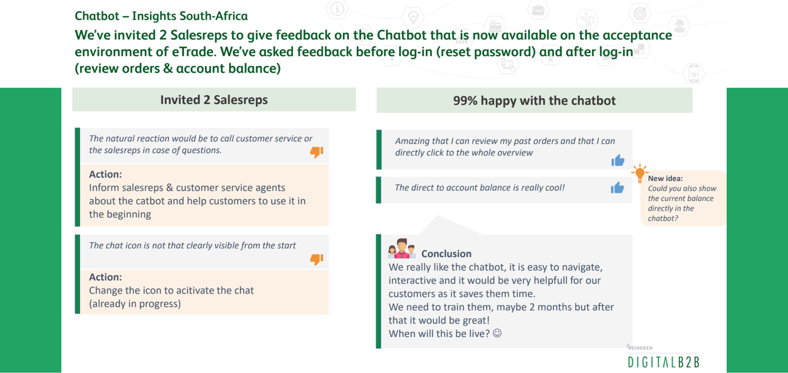

What this is
Heineken Hybris is a platform for sales to small business owners for four of Heineken’s biggest operation
companies located in Mexico, Brazil, and South Africa. The target group includes convenience/night store
owners, bar managers, hotel and restaurant managers who want an easy and straight forward ordering
experience.
Why we designed this
Originally the scope of the project included a complete redesign of the e-commerce platform. The pandemic had a big impact on Heineken financially resulting in a pause on the development of the redesign. The scope of the project changed to designing and improving flows and user stories on the existing platform. We created new user flow designs and delivered them in high fidelity screens and prototypes to be tested and then implemented into development.
We wanted to make the customer experience more smooth and friendly for our hospitality heroes. Restocking shouldn’t be a difficult or time-consuming task. Favorites and regularly purchased items should be easily findable with filters. A great chat bot experience should be reactive e.g. initiating a chat conversation with the customer or anticipating their most common questions from the get go.
What we created
Working closely with the product owner, buisiness analysts, developers and users. I designed and improved flows and user stories on the existing platform. I created new user flow designs (based best practices from common design patterns) and delivered them in high fidelity screens and prototypes to be tested and then implemented into development. Some flows include: chat bot, cookie consent tool, digital payment, flexible delivery, orderline cancellation, promotions, order staus, etc...
The updated website includes new user tested flows and new features to improve the customer experience. Hospitality owners now spend less time ordering and have more time to manage their business.


Results
Heineken Hybris is currently live for our international customer base which means hospitality owners use it regularly to order their stock. With the redesigned flow, users are able to more easily and efficiently navigate through their purchase. The customer experience is now more modern and personal with the updated chatbot service.
Before the redesign will be implemented in the future, customers can now already enjoy the updated design flows that is live and constantly improving.
 Designed in Figma
Designed in Figma


 Let's chat
Let's chat